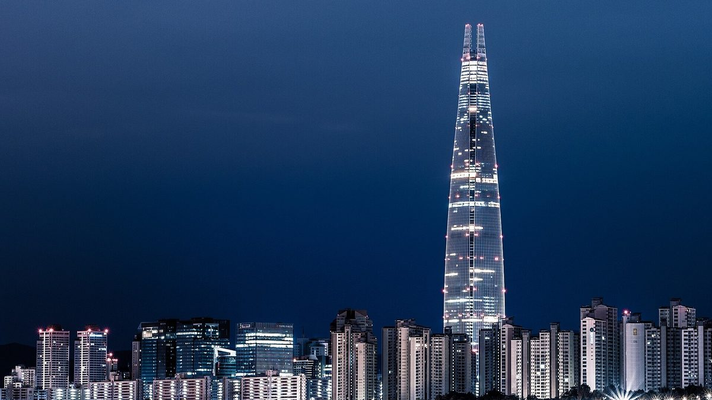

수도권 전력자급률 64.3%로 권역 중 최저…한 해 7,840만MWh를 다른 지역 전기에 기대

국토연구원, 2024년 한전 통계로 5극3특 권역별 전력 수급 분석…대구경북 160.8%·호남 158.0%, 수도권 발전은 LNG 77.5%·신재생 5.9%…용인 반도체클러스터 약 10GW 중 인근 확보는 3GW
수도권의 전력자급률이 64.3%로 전국 권역 가운데 가장 낮아, 한 해 쓰는 전기가 만드는 전기보다 7,840만MWh 많은 것으로 나타났다. 국토연구원이 2024년 한국전력공사 통계와 전력 판매량을 바탕으로 정부의 '5극3특' 권역별 전력 수급을 분석한 결과로, 시·도나 시·군·구가 아닌 권역 단위로 집계했다. 자급률이 100%를 넘은 곳은 대구경북권(160.8%, 3,680만MWh 남음), 호남권(158.0%), 강원(151.5%), 동남권(119.4%), 중부권(116.9%)이었고, 전북(70.5%)과 제주(65.9%)는 각각 640만MWh, 210만MWh가 모자랐다. 수도권 발전량은 LNG가 77.5%, 석탄이 16.4%를 차지하고 신재생에너지는 5.9%에 그쳤으며 원전은 없고, 소비는 상업·공공서비스 42.0%, 산업 36.8%, 주거 19.8% 순으로 산업 비중이 높은 비수도권과 달랐다. 국토연구원은 외부 전력에 지나치게 기대는 구조를 완화해야 한다며 상업·공공서비스 부문에 도시형 분산에너지 공급과 효율 개선, 수요 관리를 대안으로 제시했다. 약 10GW의 전력 수요가 예상되는 용인 반도체클러스터는 인근 LNG 발전소 등으로 3GW를 확보하고 나머지는 다른 지역에서 끌어오는 방안이 추진되고 있으며, 안재훈 '용인 반도체 국가산단 재검토와 초고압 송전탑 건설 반대 전국행동' 집행위원장은 수요는 수도권에 몰고 송전망과 환경 부담은 다른 지역에 넘기는 방식부터 "재검토가 시급하다"고 주장했다.
시민에너지 관점
수도권 발전량 가운데 신재생에너지가 5.9%라는 것은, 전기를 가장 많이 쓰는 곳이 자기 지붕과 주차장에서는 전기를 거의 만들지 않고 있다는 뜻이다. 땅이 좁은 대도시에서는 어렵다는 반론이 있지만, 상업·공공서비스가 소비의 42.0%를 차지하는 만큼 건물 지붕과 주차장, 공공시설 위 태양광과 효율 개선만으로도 외부 의존을 줄일 여지는 크다. 독일에서 시민과 에너지협동조합이 재생에너지 설비의 중요한 주인으로 자리 잡았듯이, 도시 주민이 출자해 소유하는 분산 발전은 송전탑 부담을 다른 지역에 떠넘기지 않고 전기를 쓰는 곳에서 직접 책임지는 길이다. 수도권 지자체는 공공건물 지붕부터 주민 출자 태양광에 내주고, 새 전력 수요를 끌어들이는 사업에는 자체 공급 계획을 먼저 요구해야 한다.
출처: 스트레이트뉴스 2026-10-23 박철응 원문 보기
首都圏の電力自給率64.3%で圏域中最低…年7,840万MWhを他地域の電気に依存
国土研究院、2024年の韓国電力統計で「5極3特」圏域別の電力需給を分析…大邱・慶北160.8%・湖南158.0%、首都圏の発電はLNG77.5%・新再生5.9%…龍仁半導体クラスター約10GWのうち近隣で確保は3GW
首都圏の電力自給率が64.3%と全国の圏域で最も低く、年間の消費量が発電量を7,840万MWh上回っていることがわかった。国土研究院が2024年の韓国電力公社の統計と電力販売量をもとに、政府の「5極3特」圏域別の電力需給を分析した結果で、市・道や市・郡・区ではなく圏域単位で集計した。自給率が100%を超えたのは大邱・慶北圏（160.8%、3,680万MWhの余剰）、湖南圏（158.0%）、江原（151.5%）、東南圏（119.4%）、中部圏（116.9%）で、全北（70.5%）と済州（65.9%）はそれぞれ640万MWh、210万MWhが不足した。首都圏の発電量はLNGが77.5%、石炭が16.4%を占め、新再生エネルギーは5.9%にとどまり原発はなく、消費は商業・公共サービス42.0%、産業36.8%、住居19.8%の順で、産業の比重が高い非首都圏とは異なった。国土研究院は外部の電力に過度に頼る構造を和らげる必要があるとして、商業・公共サービス部門で都市型の分散エネルギー供給と効率改善、需要管理を代案に挙げた。約10GWの電力需要が見込まれる龍仁半導体クラスターでは、近隣のLNG発電所などで3GWを確保し、残りを他地域から引き込む案が進められており、「龍仁半導体国家産業団地の再検討と超高圧送電塔建設に反対する全国行動」のアン・ジェフン執行委員長は、需要を首都圏に集めて送電網と環境の負担を他地域に回すやり方から「再検討が急がれる」と主張した。
市民エネルギーの視点
首都圏の発電量のうち新再生エネルギーが5.9%にすぎないということは、電気を最も多く使う地域が自らの屋根や駐車場ではほとんど電気をつくっていないことを意味する。土地の狭い大都市では難しいとの反論もあるが、商業・公共サービスが消費の42.0%を占める以上、建物の屋根や駐車場、公共施設の上の太陽光と効率改善だけでも外部依存を減らす余地は大きい。ドイツで市民とエネルギー協同組合が再生可能エネルギー設備の重要な持ち主として定着したように、都市の住民が出資して所有する分散型発電は、送電塔の負担を他地域に押しつけず、電気を使う場所が自ら責任を負う道だ。首都圏の自治体は公共建物の屋根から住民出資の太陽光に開放し、新たな電力需要を呼び込む事業にはまず自前の供給計画を求めるべきだ。
出典: Straight News 2026-10-23 Park Cheol-eung 原文を読む
首都圈电力自给率64.3%为各圈域最低…每年7,840万兆瓦时依赖其他地区电力
国土研究院以2024年韩电统计分析“5极3特”各圈域电力供需…大邱庆北160.8%、湖南158.0%，首都圈发电LNG占77.5%、新能源与可再生能源仅5.9%…龙仁半导体集群约10吉瓦需求中就近确保3吉瓦
首都圈电力自给率为64.3%，在全国各圈域中最低，每年用电量比发电量多出7,840万兆瓦时（MWh）。这是国土研究院依据2024年韩国电力公社统计和售电量，对政府“5极3特”各圈域电力供需进行分析的结果，统计单位不是市道或市郡区，而是圈域。自给率超过100%的有大邱庆北圈（160.8%，富余3,680万兆瓦时）、湖南圈（158.0%）、江原（151.5%）、东南圈（119.4%）和中部圈（116.9%），全北（70.5%）和济州（65.9%）则分别短缺640万兆瓦时和210万兆瓦时。首都圈发电量中LNG占77.5%、煤炭占16.4%，新能源与可再生能源仅占5.9%，没有核电；用电结构依次为商业和公共服务42.0%、产业36.8%、居住19.8%，与产业比重较高的非首都圈不同。国土研究院表示，需要缓解过度依赖外部电力的结构，并为商业和公共服务部门提出了城市型分布式能源供应、提高能效和需求管理等对策。预计用电需求约10吉瓦的龙仁半导体集群，正推进由附近LNG电厂等确保3吉瓦、其余从其他地区输入的方案；“要求重新审视龙仁半导体国家产业园区、反对建设超高压输电塔全国行动”执行委员长An Jae-hun主张，把需求集中在首都圈、把输电网和环境负担转嫁给其他地区的做法“亟需重新审视”。
市民能源视角
首都圈发电量中新能源与可再生能源只占5.9%，意味着用电最多的地方几乎没有在自己的屋顶和停车场上发电。有人认为土地紧张的大城市难以做到，但既然商业和公共服务占用电量的42.0%，仅靠建筑屋顶、停车场和公共设施上的太阳能以及能效改善，减少外部依赖的空间就很大。正如在德国，市民和能源合作社已成为可再生能源设施的重要所有者，由城市居民出资拥有的分布式发电，是不把输电塔负担推给其他地区、由用电地自己承担责任的道路。首都圈地方政府应先把公共建筑屋顶开放给居民出资的太阳能项目，并要求引入新增电力需求的项目先拿出自有供电计划。
来源: Straight News 2026-10-23 Park Cheol-eung 查看原文
Seoul capital region's power self-sufficiency lowest of all regions at 64.3%, relying on other regions for 78.4 million MWh a year
Korea Research Institute for Human Settlements analyses 2024 KEPCO data by the government's 5+3 regional blocs; Daegu-Gyeongbuk at 160.8% and Honam at 158.0%; capital region generation is 77.5% LNG and 5.9% new and renewable; Yongin chip cluster secures only 3GW nearby of about 10GW demand
The Seoul capital region has the lowest power self-sufficiency of any region in Korea at 64.3%, consuming 78.4 million MWh more electricity a year than it generates. The finding comes from an analysis by the Korea Research Institute for Human Settlements, which used 2024 Korea Electric Power Corporation statistics and electricity sales to tally supply and demand by the government's "5+3" regional blocs rather than by province or city. Regions above 100% were Daegu-Gyeongbuk (160.8%, a surplus of 36.8 million MWh), Honam (158.0%), Gangwon (151.5%), the southeast (119.4%) and the central region (116.9%), while North Jeolla (70.5%) and Jeju (65.9%) fell short by 6.4 million MWh and 2.1 million MWh respectively. Generation in the capital region is 77.5% LNG and 16.4% coal, with new and renewable energy at only 5.9% and no nuclear plants, and its consumption is led by commerce and public services at 42.0%, followed by industry at 36.8% and housing at 19.8%, unlike regions outside the capital where industry weighs more heavily. The institute said the region's heavy reliance on outside power needs to be eased and pointed to urban distributed energy, efficiency improvements and demand management in commerce and public services. For the Yongin semiconductor cluster, where demand of about 10GW is expected, a plan is under way to secure 3GW from nearby LNG plants and bring in the rest from other regions, and An Jae-hun, executive committee chair of a national coalition opposing the Yongin chip complex and its ultra-high-voltage transmission towers, argued that the approach of concentrating demand in the capital region while shifting grid and environmental burdens elsewhere "urgently needs to be reconsidered."
Citizen Energy View
New and renewable energy making up just 5.9% of the capital region's generation means the place that uses the most electricity produces almost none of it on its own roofs and car parks. Some argue that land-poor big cities cannot do much, but with commerce and public services accounting for 42.0% of consumption, solar on building roofs, car parks and public facilities plus efficiency gains alone leave plenty of room to cut outside dependence. Just as citizens and energy cooperatives in Germany have become important owners of renewable capacity, distributed generation that urban residents invest in and own is a way for the places that use power to take responsibility for it instead of pushing transmission towers onto other regions. Local governments in the capital region should open public building roofs to resident-funded solar first and require projects that bring in new power demand to present their own supply plans.
Source: Straight News 2026-10-23 Park Cheol-eung Read the original